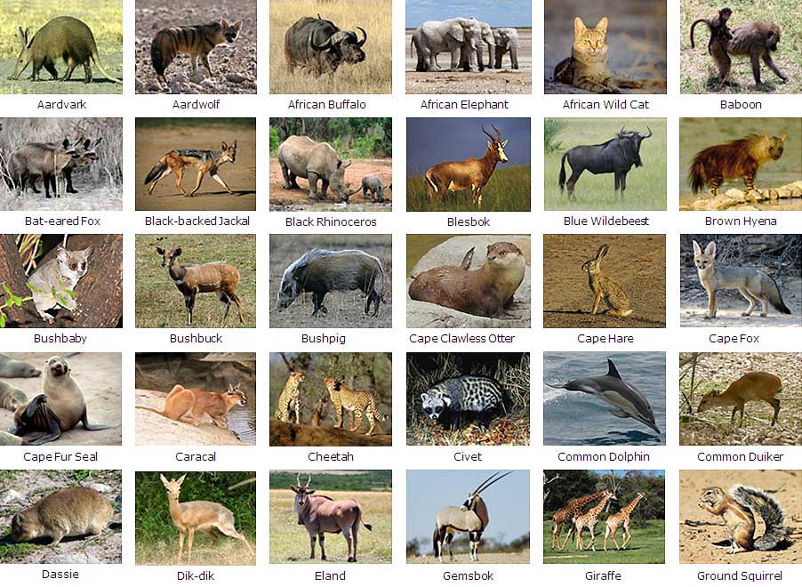

Animals
In the world we live in today, there are many different species of animals. An animal is a living organism that feeds on organic matter, typically having specialized sense organs and nervous system and able to respond rapidly
Types
There are many different types of animals in the world. Scientists have found ways of grouping them based on their characteristics. This has made it easier to identify animals. The following are the most common groups used to classify animals.
- Mammals
- Birds
- Amphibians
- Reptiles
- Fish

- Mammals
- Any of various warm-blooded vertebrate animals of the class Mammalia, including humans, characterized by a covering of hair on the skin and, in the female, milk-producing mammary glands for nourishing the young.
- Birds
- Any of various warm-blooded, egg-laying, feathered vertebrates, having forelimbs modified to form wings.
- Amphibians
- Any cold-blooded vertebrate of the class Amphibia, comprising frogs and toads, newts and salamanders, the larvae being typically aquatic, breathing by gills, and the adults being typically semi-terrestrial, breathing by lungs and through the moist, glandular skin.
- Reptiles
- Any cold-blooded vertebrate of the class Reptilia, comprising the turtles, snakes, lizards, crocodiles, and various extinct members including the dinosaurs.
- Fish
- Any of various cold-blooded, aquatic vertebrates, having gills, commonly fins, and typically an elongated body covered with scales.

Examples
Animal groupsto better understand their classification
The following are examples of mammals:
- Aardvark
- Lion
- Tiger
- Humans
- Elephants
- Dog
- Cat
The following are examples of Birds:
- Parrots
- Sparrows
- Robins
- BlueJays
- Chickens
- Ducks
- Pigeons
The following are examples of amphibians:
- Frogs
- Toads
- Newts
- Salamanders
The following are examples of reptiles:
- Lizards
- Snakes
- Crocodile
- Turtles
- Chameleon
- Gecko
- Alligator
The following are examples of fish:
- Sharks
- Salmon
- Tuna
- Gold Fish
- Cat fish
- Guppy
- Bass
Credits

Creditsof this page